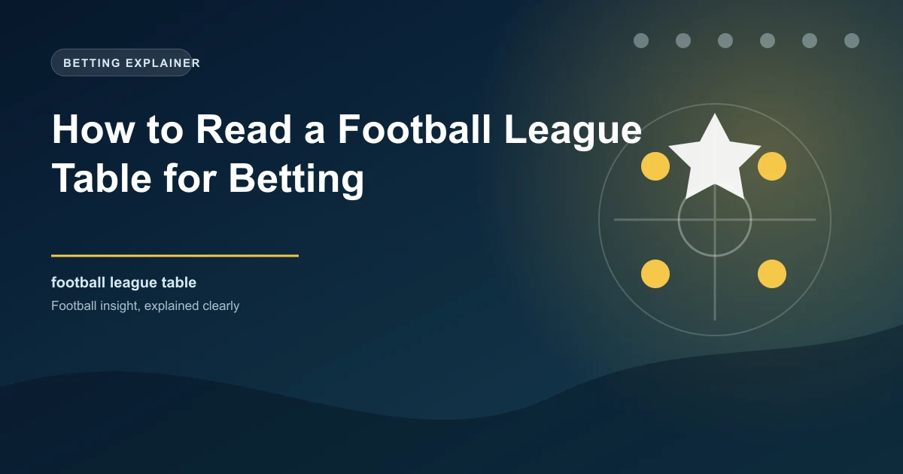

The league table is the most visible piece of football data in existence. Every fan knows their team's position, points tally, and goal difference. But for betting purposes, the league table contains far more information than most people extract from it. Learning to read a football league table with a bettor's eye reveals patterns, motivations, and value that casual observers miss entirely.
This guide shows you how to go beyond the surface and use league table data to make more informed betting decisions.
Most bettors look at the league table and see two things: who is top and who is bottom. This is a start, but it barely scratches the surface. A proper analysis of the league table for betting purposes involves looking at multiple columns and calculating derived metrics that reveal the true picture.
Points per game normalises the data across teams that have played different numbers of matches. This is particularly useful early in the season when some teams have played 12 matches and others have played 15 due to postponements or cup commitments.
| Team | Played | Points | PPG |
|---|---|---|---|
| Arsenal | 15 | 33 | 2.20 |
| Liverpool | 18 | 39 | 2.17 |
| Man City | 14 | 30 | 2.14 |
Liverpool are top of the table on points, but Arsenal have the better PPG. If these teams were to play each other, Arsenal's underlying performance suggests they might deserve slightly shorter odds than the table position alone would indicate.
Using PPG instead of total points gives you a more accurate picture of team quality, especially when comparing teams from the same league. It removes the noise created by fixture congestion and postponements.
The overall league table combines home and away performances into a single picture, but the two are often dramatically different. Some teams are fortress-like at home but vulnerable away. Others are consistent regardless of venue. Understanding these splits is one of the most powerful tools in a bettor's arsenal.
| Team | Home PPG | Away PPG | Difference |
|---|---|---|---|
| Aston Villa | 2.45 | 1.22 | +1.23 |
| Brighton | 1.89 | 1.78 | +0.11 |
| West Ham | 1.56 | 1.67 | -0.11 |
Aston Villa are a completely different team at home compared to away. Brighton are consistent regardless of venue. West Ham actually perform better away. These splits directly inform which bets are value in home vs away scenarios.
When analysing a specific match, always check the home and away splits for both teams. A match between a strong home team and a poor away team produces very different betting opportunities than the reverse fixture.
Goal difference is often underused by bettors, but it provides a quick and reliable indicator of overall team quality. Teams with large positive goal differences are consistently outscoring their opponents, which suggests dominance that might not be fully reflected in their points tally (especially if they have drawn several matches they dominated).
Conversely, teams with small negative goal differences despite a reasonable league position might be overperforming their underlying metrics and could be due for a regression. These teams are often poor value as favourites because the market has not yet adjusted to their true level.
Track how goal difference changes over a five-match window. A team whose goal difference is improving (scoring more, conceding fewer) is on an upward trajectory that might not yet be reflected in their league position. This is particularly useful for identifying teams about to climb the table and offer value as underdogs in upcoming matches.
One of the most practical applications of league table analysis for betting is identifying motivation. The position of each team in the table tells you what they are playing for, which directly affects their likelihood of winning.
The further into the season you go, the more motivation matters. Early in the season, every team is motivated. By March and April, the table has sorted teams into motivation groups, and this is where betting value often exists.
Most football statistics sites offer a form table that shows the last five or ten matches separately from the overall season record. The form table is a different analytical tool from the league table, and understanding when to use each one improves your betting decisions.
A team might be 8th in the league table but top of the form table, having won their last five matches. This team is playing better than their league position suggests and might offer value as underdogs against a higher-ranked team that is in poor form.
The league table is a valuable tool, but it should never be your only tool. It does not account for injuries, tactical changes, fixture congestion, or psychological factors. Use the table as one input among many in your analysis, not as the sole basis for your betting decisions.
Our 1X2 predictions incorporate league table data, form analysis, and advanced statistics to identify value in today's matches.
 Win
Win